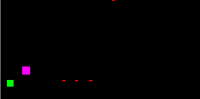
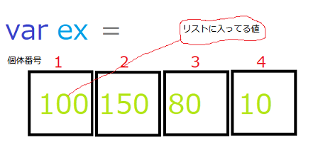
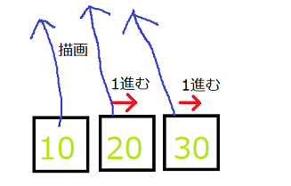
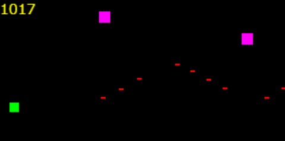
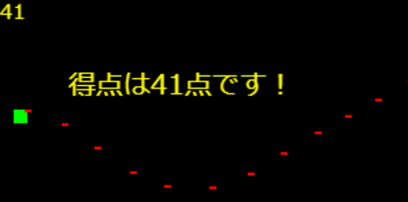

javascriptでシューティングゲームみたいなものを作る④
現在の進歩状況

こんにちは、最近は投稿を全くしていなくて、前のjavascriptでシュー（ｒｙ）③から何か月も空いてしまいました。
何か月空いたかは、空きすぎて覚えていません。なのでアクセス数は稼げないままなのです。
ではjavascriptでシューティングゲームみたいなものを作る第四回目をやっていきましょう。
今回は、敵の増殖をやっていきたいと思います。
記事
javascriptでシューティングゲームみたいなものを作る①
javascriptでシューティングゲームみたいなものを作る②
javascriptでシューティングゲームみたいなものを作る③
今回のソースコード
とりあえず敵を増殖
何か月も変更をさぼってアクセス数だけを見て「アクセス数伸びないかなー」だとかホームページのデザインがダサいなーだとか言ってたから忘れてたのですが、
もう
第二回目ですでに敵を増やせる状態にしておいたのです！（自分えらい）
というわけで簡単に実装できますよ。さっそくコードです。
あっ、そういえばenemy（敵）の描画にバグがあったのをこの記事を書いているとき発見した（ｵｯｿ）ので訂正しました。
もし前から読んでいた人がいれば（多分いない。いたらすごい）
第二回目を読んで訂正お願いします。
長引きましたがコードです。
main.js 13行目～
//enemyの座標
var ex = [200,200];
var ey = [100,50];
これだけです、えっこれだけ？と思うかもしれませんが。前に複数敵を描画できるようにしたからこれだけなのです。（自分えらい二回目）
そうしていろいろやって実行して、できたーってなるのです。javascript久しぶりだなぁ（（ﾅﾆｺﾉﾋﾄ
どうやって複数描画を実装したか（分かる人はよんでも読まなくてもいい）
いまさらですが、めんどくさくてしていなかったのでどうやって描画したのかを説明していきたいと思います。（（ｵｯｿ二回目
まず、このイラストを見てわかる通り、リストに個体番号順にデータを収納しているのです。

それでそのデータのリストに基づいてenemyを作ろうよ。と言うだけのことなのです。
で、ここですね。for文を使って何をしているかと言うと、単に個体番号順に描画しているだけです。
for(var i = 0;i < lx.length;i++){
ctx.beginPath()
ctx.rect(lx[i],ly[i],5,2)
//以下略
↓これを繰り返してるだけです。

はいというわけでまあ、すごい遅れた説明が終わったのでまたゲーム作りに戻ります。（（ﾊﾔｸﾓﾄﾞﾚ
敵をランダムな座標に作るよ
はい、やることはタイトルの通りです。特に難しいことは全くないのでいきなりコードです。
main.js103行目~
//enemyをランダムな座標に作る
function e_make(){
ex.push(300)
ey.push(Math.floor(Math.random()*130)) //0~129
}
setInterval(e_make,1000) //1.5秒おきに実行
まず、push関数っていうのはリストにデータを追加するということです。
ここでは、exというリストにenemyの敵の座標データを追加しています。
Math.floor(Math.random()*130)は、0~129の間のランダムな値を作るプログラムです。
ちなみに、Math（
ます）っていうのはjavascriptで高度な演算をするときによく使い
ます。（（ﾂﾏﾝﾅ
setInterval(△,〇)は〇ミリ秒おきに△関数を実行するみたいなやつです。（適当）
.
.
アーオワッタオワッタ
点数を実装する
簡単です。（それだけ）
main.js 17行目~
var p = 0; //点数（ポイント）
main.js 52 行目~
console.log("衝突しました!")
collision = true
collision_n = j //個体番号を衝突した個体番号にする
p += 1; //ポイントを1増やす（追加）
}
これで一応ポイントをカウントする機能は実装で来ているんですが、ポイントを表示させるプログラムはまだ書いてないのでほとんど違いはありません。
だから、ポイントを表示するプログラムも書いちゃいましょう。
main.js 46行目~
function p_draw(){
ctx.font = "9px UTF-8"
ctx.fillStyle="#ffff00"
ctx.fillText(p,0,10)
}
main.js 94行目
p_darw()
こんな感じに打った数だけ得点が追加されます。

ゲームオバーの実装（制限時間）
書くのめんどくさくなってきた最後だからがんばる
main.js 19行目
var kt = new Date(); //時間
main.js 111行目~
var t = new Date(); //今の時間（ミリ秒）を取得
if(t.getTime()-kt.getTime() >=60000){ //今の時間 >= 60秒
clearInterval(mg)
game_over()
}
main.js 121行目
var mg = setInterval(draw,10) //10ミリ秒単位で実行 ※編集
main.js 123行目~
function game_over(){
ctx.font = "20px UTF-8"
ctx.fillStyle="#ffff00"
ctx.fillText("得点は"+p+"点です！",50,70)
}
色々やるとこうなります。（）

今日は
めんどくさいのでたくさんやったのでもう終わりにします。
もしかしたら⑤もおまけとしてやるかもです。
久しぶりにブログ書いたから変更忘れずにしなきゃ
今日のソースコード
いやぁgistは楽だねぇ。いいねぇこれ